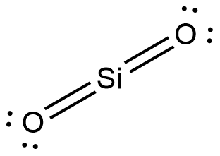
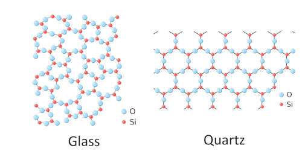
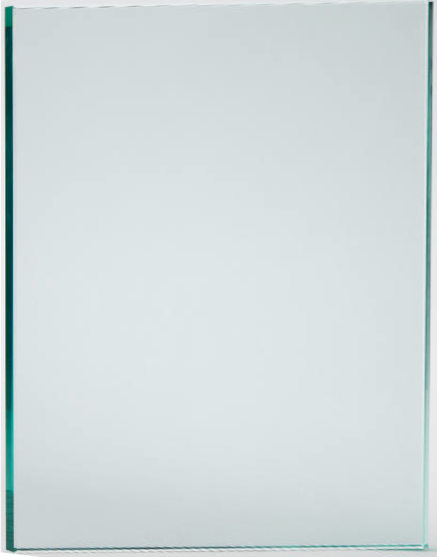

Glass is an amorphous solid with a melting point of 1400°C-1600°C. It is composed mostly of silicon dioxide (SiO2). Silicon (Si) has 4 valence electrons and oxygen (O) has 6 valence electrons, so 2 oxygen atoms form covalent bonds to 1 silicon atom.

Lewis structure of silicon dioxide
The intermolecular forces holding glass together are covalent bonds (Si-O). This creates a covalent solid structure with a 3D structure of covalent bonds between molecules. There are also London dispersion forces and dipole-dipole interactions but they're weaker than the covalent bonds. Therefore, the covalent bonds are the strongest, the dipole-dipole interactions are the second strongest, and the London dispersion forces are the weakest. Glass has such a high melting point becaues of the strong covalent bonds.

Glass is a covalent solid which means it's composed of many molecules held together by covalent bonds in a structure. Glass and quartz have the same composition, as seen in the image above, but they have different structures. Glass is amorphous which means the molecules are arranged randomly, while quartz is crystalline with molecules arranged into a lattice.
